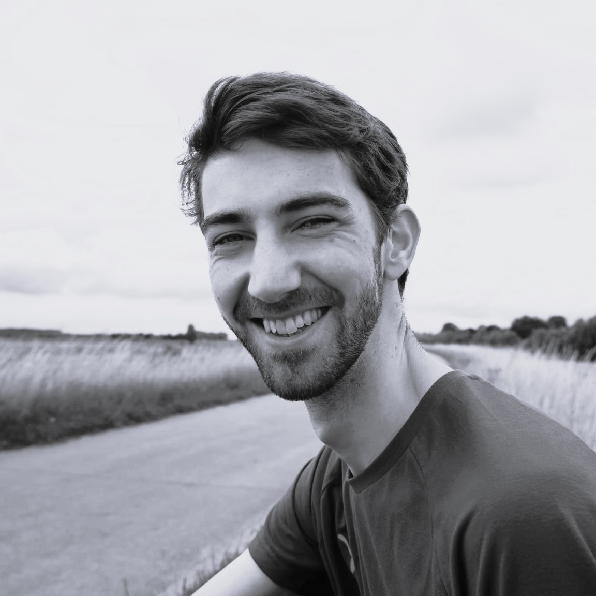
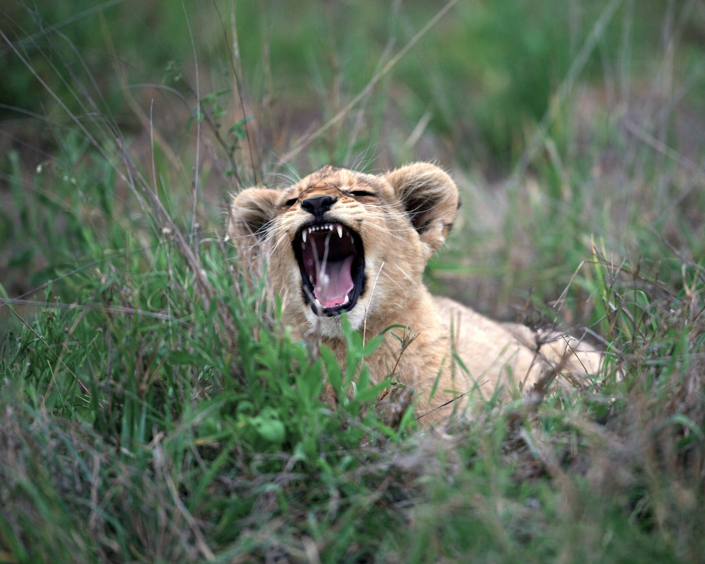
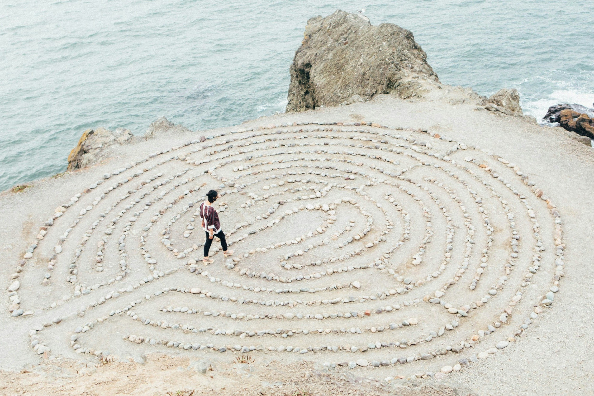

Voel
Voel is een praktijk in wording, opgezet in het kader van mijn afstudeertraject aan het AUMM instituut. Ik bied sessies Primal Rebirth® therapie aan onder supervisie van een ervaren docent. Primal Rebirth® therapie is een vorm van lichaamsgerichte (psycho)therapie waarin het innerlijke kind centraal staat.
KennismakenOver mij
Mijn naam is Thom van Dijk (1994), geboren in Groningen. Momenteel volg ik de opleiding tot lichaamsgericht therapeut en begeleid ik, in het kader van mijn afstudeertraject, cliënten in individuele sessies. Dit gebeurt onder supervisie van een ervaren docent binnen de opleiding.
Mijn interesse in lichaamsgericht werken is ontstaan vanuit een persoonlijke zoektocht naar wie ik in essentie ben. Lange tijd zocht ik vooral antwoorden via het denken en analyseren. Hoewel dit mij veel inzicht bracht, merkte ik dat er iets ontbrak. Pas toen ik in contact kwam met lichaamsgerichte therapie ontdekte ik hoe waardevol het is om niet alleen te begrijpen, maar ook werkelijk te voelen en te ervaren.
Deze manier van werken opende voor mij een geheel nieuwe dimensie. Ik begon te voelen dat ik een lichaam had, werd me bewuster van mijn patronen en ervoer meer vrijheid, stevigheid en zelfvertrouwen. Het bracht me dichter bij mezelf en gaf me het gevoel werkelijk aanwezig te zijn. Die ervaring inspireerde mij om de opleiding Primal Rebirth Therapie aan het Aumm Instituut te volgen.
In mijn werk staan zorgvuldigheid, afstemming en zachtheid centraal. Ik begeleid cliënten in het ontwikkelen van meer lichaamsbewustzijn, met als uitgangspunt het leren luisteren naar het lichaam en het daadwerkelijk aankomen in het hier en nu. Vanuit dit contact ontstaat er ruimte voor verdieping en een sterker gevoel van verbinding met jezelf. Voor mij is het belangrijk dat cliënten zich tijdens de sessies veilig en gezien voelen, en dat zij met een gevoel van helderheid en verbinding naar huis gaan.


Primal Rebirth® therapie
Primal Rebirth® therapie (PRT) is een vorm van lichaamsgerichte therapie waarbij het innerlijk kind centraal staat. In de therapie ga je terug naar de plek waar je overlevingsstrategieën en overtuigingen gevormd worden. Deze overtuigingen en strategieën ontstaan doorgaans in de eerste zes jaar van je leven en zelfs als je nog in de buik van je moeder zit. Het innerlijke kind gebruiken we als metafoor voor deze periode van je leven, het kind dat je ooit geweest bent.
De overlevingsstrategieën zijn in de eerste jaren van je leven nodig geweest om te kunnen overleven. Je bent als kind afhankelijk van je ouders en verzorgers en past je daarom aan, want als zij er niet meer voor je zijn overleef je het niet. Naarmate je ouder wordt heb je deze overlevingsstrategieën niet meer nodig, maar je neemt ze nog steeds mee in je volwassen leven. Veel moeilijkheden die we ervaren hebben hun oorsprong in deze strategieën.
Met PRT leer je contact te maken met je innerlijke kind en zijn of haar overlevingsstrategieën. Door terug te gaan in de tijd en er als volwassene te kunnen zijn, waar dit eerder niet kon, is heling mogelijk. Dit doen we door middel van bio-energetica, meditatie, ademoefeningen en opstellingen.
Voor wie
Heb je last van stress, ben je onrustig, pieker je veel, maak je moeilijk contact, loop je steeds weer tegen de zelfde problemen aan. Dan kan lichaamsgerichte therapie een mooie manier zijn om eens verder te kijken dan wat het hoofd al weet. Leer voelen en luisteren naar je lichaam, praat met je innerlijke kind en leer jezelf op een diepere laag kennen. Land in je lichaam en voel je meer geaard. Internaliseer wat je al weet door de ervaring te voelen in je lichaam. En ben je simpelweg nieuwsgierig naar een lichaamsgerichte benadering? Dan ben je ook van harte welkom!

Locatie
Papiermolenlaan 3-23
9721 GR Groningen
Kennismaken
Voordat een eerste sessie gepland kan worden zal er een kosteloos kennismakingsgesprek plaatsvinden. Het kennismakingsgesprek duurt maximaal 45 minuten met als doel een indruk te krijgen van mij als therapeut, mijn werkwijze en om te onderzoeken of er een passende klik voelt. Wanneer dit voor beide het geval is vullen we aansluitend samen een medische vragenlijst in. Dit helpt om zorgvuldig te kijken of jouw hulpvraag goed aansluit bij wat ik binnen mijn begeleiding kan bieden.
Een sessie lichaamsgerichte therapie duurt een uur en kost €45,-. Sessies worden gegeven op maandag en dinsdag in de stad Groningen in het kantorencomplex bij het Openluchtbad De Papiermolen.
Voel je welkom om contact op te nemen via